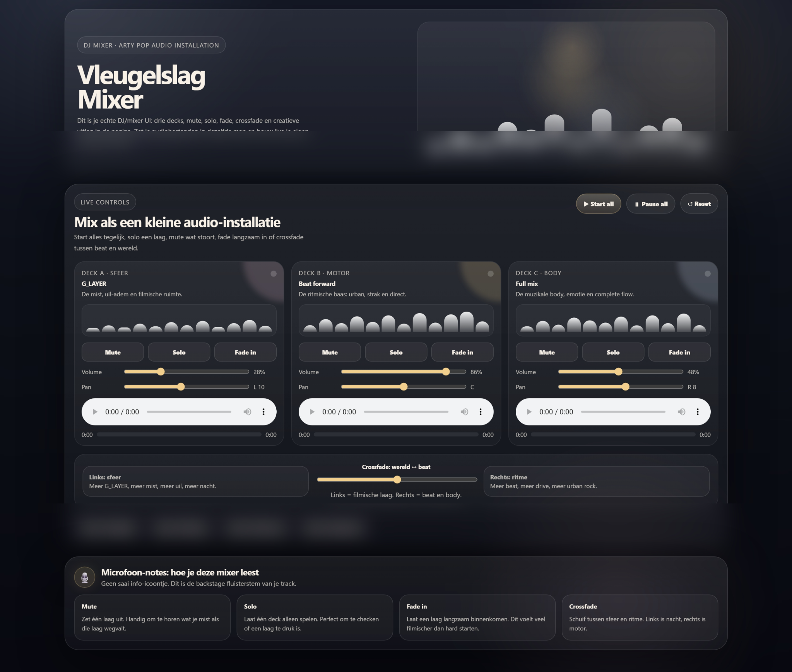
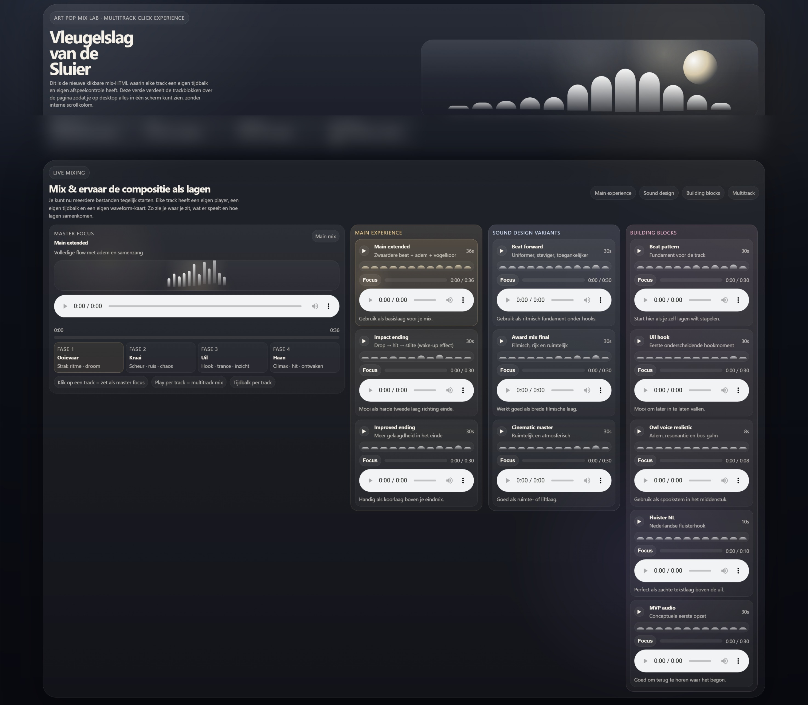
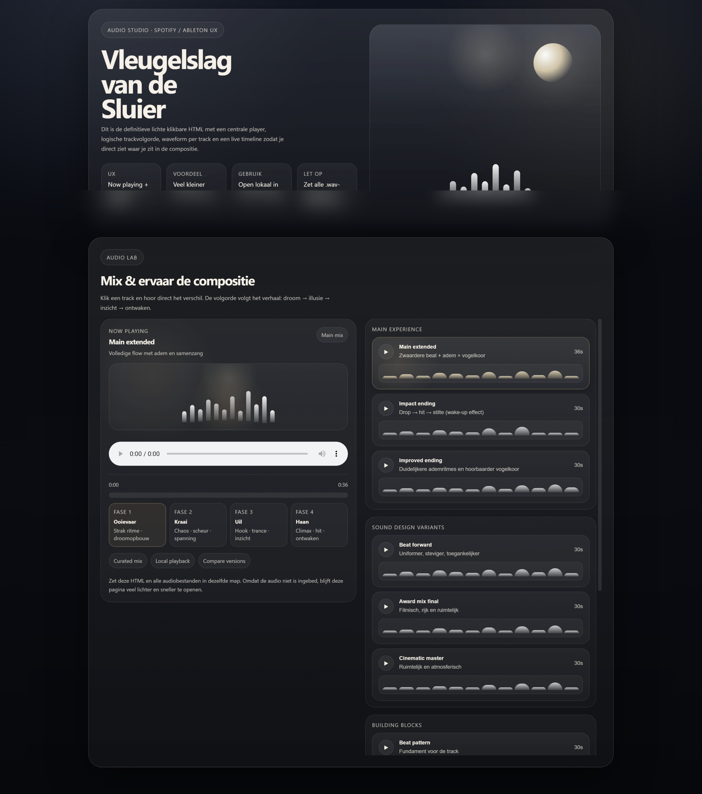

"Sommige ideeën beginnen als een ervaring. Andere groeien uit tot een systeem waarmee je zelf kunt spelen."
Vleugelslag begon als een audioverhaal. Door te experimenteren met UX, structuur, interactie en AI ontstonden nieuwe inzichten. Deze pagina laat zien hoe het concept zich stap voor stap ontwikkelde.

Van muziek naar verhaal
Vraag
Hoe maak je van een nummer een verhaal?
Wat veranderde er?
De audio werd opgebouwd als een reis met verschillende fasen. De gebruiker volgt het verhaal stap voor stap.
Wat ik leerde
Storytelling helpt om losse onderdelen betekenis en richting te geven.

Van verhaal naar structuur
Vraag
Waaruit bestaat die reis eigenlijk?
Wat veranderde er?
De ervaring werd opgesplitst in lagen, bouwstenen en onderdelen. Daardoor werd zichtbaar hoe het geheel is opgebouwd.
Wat ik leerde
Complexiteit wordt begrijpelijker wanneer je deze structureert.

Van structuur naar interactie
Vraag
Wat gebeurt er wanneer de gebruiker zelf de controle krijgt?
Wat veranderde er?
De gebruiker kan zelf mixen, solo zetten, muten, faden en experimenteren.
Wat ik leerde
Interactie verandert een ervaring van passief naar actief.
Wat dit groeiproces laat zien
Vleugelslag groeide van een verhaal naar een systeem waarmee je kunt experimenteren.
Het project laat zien hoe storytelling, UX, systeemdenken, interactieontwerp en AI elkaar kunnen versterken tijdens een iteratief ontwerpproces.